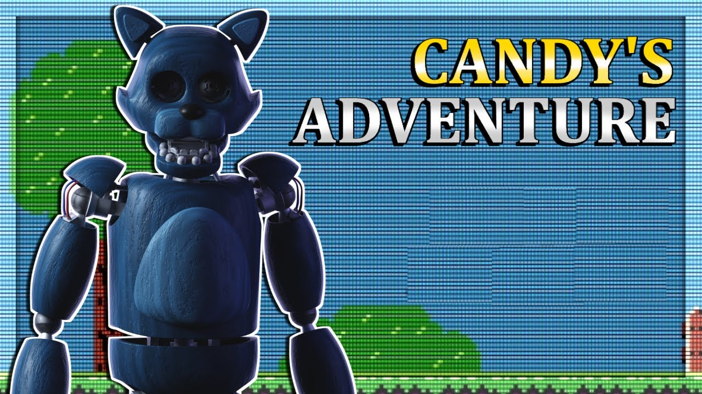

*Candy's Adventure* é um fan game onde o jogador controla o animatrônico Candy, do jogo *Five Nights at Candy's*. O jogo oferece uma perspectiva diferente ao colocar os jogadores nos sapatos de um dos animatrônicos, explorando diferentes locais e enfrentando novos desafios enquanto desvenda mistérios dentro do pizzeria.
O jogo combina exploração e mecânicas de sobrevivência, com o jogador controlando o animatrônico enquanto tenta escapar de perigos e evitar ser destruído. Cada escolha pode impactar o desenrolar da história, tornando a experiência mais imersiva.